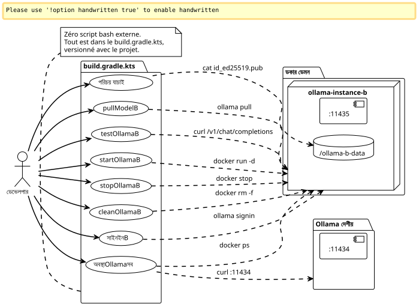

মেসন Gradle প্লাগইন: দুটি Ollama Pro উদাহরণকে সমান্তরালে চালানোর জন্য
Publié le 08 May 2026
ডকার কমান্ড ম্যানুয়ালি টাইপ করার জন্য কেন, যখন আমরা সকলেরকে গ্রেডল টাস্কে সংযোজিত করতে পারি? এইভাবে আমি আমার dual-Ollama Pro কনফিগারেশনকে কোনো বাহ্যিক শেল স্ক্রিপ্ট ছাড়া শিল্পীভূত করে ফেলেছি। শুরু, বন্ধ, পরিচয়, সাইন-ইন, পুল — সবই দিয়ে যায়`./gradlew`.
ভূমিকা
আগের নিবন্ধে, আমি দেখিয়েছিলাম কিভাবে একই মেশিনে দুটি ওllamা প্রো অ্যাকাউন্টকে ডকার কনটেইনারের ভিতরে দ্বিতীয় ইনস্ট্যান্সকে আলাদা করে বসিয়ে চালানো যায়। সেটআপ কাজ করে, তবে দৈনন্দিন ব্যবস্থাপনা দ্রুত কষ্টদায়ক হয়ে উঠে: কনটেইনারার نام মনে রাখতে হয়, সঠিক কমান্ডগুলো পুনরায় চালাতে হয়।docker exec, কোন পোর্ট সক্রিয় আছে তা জাঁচ করুন…
আপনি সেই মুহূর্তকে জানেন যখন আপনার কাছে ১৪ টি টার্মিনাল খোলা থাকে এবং আপনি টাইপ করছেন।`docker exec ollama-instance-b ollama list`চতুর্থবার, এবং আপনি মনে করেন « একটি আরও পরিষ্কার উপায় থাকতে হবে » ?
এই পদ্ধতি Gradle
কোড তৈরি করার জন্য শুধুমাত্র নয়। Gradle একটি স্থানীয় অবকাঠামোর কন্ডাক্টরের মতো। provisioning, যাচাই, পরীক্ষা এবং পরিষ্কার করার কাজগুলো। সবকিছু একটি সংস্করণ-কন্ট্রোলের মধ্যে`build.gradle.kts`যে পাশে বাস করে`docker-compose.yml`.

গ্রেডেল ইন্ফ্রাস্ট্রাকচার জন্য কেন?
প্রশ্নটি উদ্দীপক। Grade‑এর মাধ্যমে যে টুলটি ব্যবহৃত হয় তা হলো build tool। স্বাভাবিকভাবে এটি কম্পাইল করে, টেস্ট করে এবং প্যাকেজ করে। না, এটি ডকার কন্টেইনার চালায় না।
যদিও Gradle একটি ডিপেন্ডেন্সি গ্রাফ ইঞ্জিনও — এবং এটিই আমাদের ক্ষেত্রে আকর্ষণীয় হয়ে ওঠে।
আমরা চাই:
-
কনটেইনারেরকে সাইন-ইন থেকে আগে চালু করা উচিত
-
পরিচয়টি মডেল পিলের আগে যাচাই করা উচিত
-
একটি API টেস্ট চুপচুপে ব্যর্থ হয় যদি কনটেইনার বন্ধ থাকে
শুদ্ধ নির্ভরশীলতা গ্রাফ। Gradle এই কাজের জন্য তৈরি করা হয়েছে। Kotlin DSL কাজের লেখাকে সহজ ও সুস্বচ্ছ করে, এবং`doLast`সিস্টেম কমান্ড চালিয়েapplication code এর মতো ব্যবহার করতে দেয়।
এবং বিশেষ করে : কোনো বাশআরসি রক্ষা করতে হবে না, কোনো স্ক্রিপ্ট যা আড়াই বসে আছে`~/bin`, docker-compose এর পাশে কোন Makefile নেই। সব একটি একক ফাইলে বাস করে, প্রকল্পের কোডের একই স্থানে।
পূর্ণ build.gradle.kts
এটি হলো ফাইলটি যা আমি শেষে লিখেছি। এটি ভলিউম প্রোভিশনিং থেকে যাচাইকরণের curl-এ, ইন্টারেক্টিভ সাইন-ইন দিয়ে সমস্ত কাজ করে।
import java.io.ByteArrayOutputStream
plugins {
base
}
// -------------------------------------------------------------------------
// Configuration
// -------------------------------------------------------------------------
val instanceName = "ollama-instance-b"
val instancePort = 11435
val instanceImage = "ollama/ollama:0.20.2"
val dataDir = file("${System.getProperty("user.home")}/ollama-b-data")
val nativePort = 11434
// Modèles à gérer — cloud Pro + un modèle local gratuit pour les tests
val proModels = listOf("deepseek-v4-pro:cloud", "gemma4:31b-cloud")
val freeModels = listOf("qwen3:0.6b")
// -------------------------------------------------------------------------
// Tâche préparatoire — création du volume si absent
// -------------------------------------------------------------------------
val prepareVolume by tasks.registering {
group = "ollama"
description = "Crée le répertoire de volume pour l'instance B si absent"
doLast {
if (!dataDir.exists()) {
dataDir.mkdirs()
println("Volume créé : ${dataDir.absolutePath}")
} else {
println("Volume existant : ${dataDir.absolutePath}")
}
}
}
// -------------------------------------------------------------------------
// Démarrage du conteneur Docker
// -------------------------------------------------------------------------
val startOllamaB by tasks.registering(Exec::class) {
group = "ollama"
description = "Lance le conteneur Docker pour l'instance Ollama B"
dependsOn(prepareVolume)
commandLine(
"docker", "run", "-d",
"--name", instanceName,
"-p", "$instancePort:11434",
"-v", "${dataDir.absolutePath}:/root/.ollama",
"-e", "OLLAMA_HOST=0.0.0.0",
"--restart", "always",
instanceImage
)
isIgnoreExitValue = true
doLast {
val alreadyRunning = executionResult.get().exitValue != 0
if (alreadyRunning) {
logger.lifecycle("Le conteneur '$instanceName' existe déjà — tentative de démarrage")
} else {
logger.lifecycle("Conteneur '$instanceName' lancé")
}
}
}
// -------------------------------------------------------------------------
// Arrêt du conteneur
// -------------------------------------------------------------------------
val stopOllamaB by tasks.registering(Exec::class) {
group = "ollama"
description = "Arrête le conteneur Docker de l'instance B"
commandLine("docker", "stop", instanceName)
isIgnoreExitValue = true
doLast {
logger.lifecycle("Conteneur '$instanceName' arrêté")
}
}
// -------------------------------------------------------------------------
// Affichage de la clé publique (Device Key)
// -------------------------------------------------------------------------
val checkIdentity by tasks.registering(Exec::class) {
group = "ollama"
description = "Affiche la clé publique SSH de l'instance B"
dependsOn(startOllamaB)
commandLine("docker", "exec", instanceName, "cat", "/root/.ollama/id_ed25519.pub")
standardOutput = ByteArrayOutputStream()
doLast {
val pubKey = standardOutput.toString().trim()
println("=".repeat(60))
println("Device Key (Instance B)")
println("=".repeat(60))
println(pubKey)
println("=".repeat(60))
println("→ Enregistre cette clé sur https://ollama.com/settings/keys")
println("→ Puis exécute : ./gradlew signInB")
println("=".repeat(60))
}
}
// -------------------------------------------------------------------------
// Sign-in interactif (Ouvrira le navigateur)
// -------------------------------------------------------------------------
val signInB by tasks.registering(Exec::class) {
group = "ollama"
description = "Lance l'authentification interactive Ollama pour le compte B"
dependsOn(startOllamaB)
standardInput = System.`in`
standardOutput = System.out
errorOutput = System.err
commandLine("docker", "exec", "-it", instanceName, "ollama", "signin")
doFirst {
logger.lifecycle("Authentification pour le Compte Pro B...")
logger.lifecycle("Ouvre ton navigateur et connecte-toi avec l'email du compte B")
}
}
// -------------------------------------------------------------------------
// Pull d'un modèle (paramétrable via propriété Gradle)
// -------------------------------------------------------------------------
val pullModelB by tasks.registering(Exec::class) {
group = "ollama"
description = "Pull un modèle sur l'instance B. Usage : ./gradlew pullModelB -Pmodel=nom:tag"
dependsOn(startOllamaB)
val modelName = project.findProperty("model") as? String ?: "qwen3:0.6b"
commandLine("docker", "exec", instanceName, "ollama", "pull", modelName)
doFirst {
logger.lifecycle("Pull du modèle '$modelName' sur l'instance B...")
}
doLast {
logger.lifecycle("Modèle '$modelName' pullé avec succès")
}
}
// -------------------------------------------------------------------------
// Pull de tous les modèles Pro (batch)
// -------------------------------------------------------------------------
val pullAllProModels by tasks.registering {
group = "ollama"
description = "Pull tous les modèles cloud Pro sur l'instance B"
dependsOn(startOllamaB)
doLast {
proModels.forEach { model ->
logger.lifecycle("→ Pull $model...")
val process = ProcessBuilder("docker", "exec", instanceName, "ollama", "pull", model)
.inheritIO()
.start()
process.waitFor()
}
logger.lifecycle("Tous les modèles Pro pullés")
}
}
// -------------------------------------------------------------------------
// Pull de tous les modèles gratuits (batch / première install)
// -------------------------------------------------------------------------
val pullAllFreeModels by tasks.registering {
group = "ollama"
description = "Pull tous les modèles locaux gratuits sur l'instance B"
dependsOn(startOllamaB)
doLast {
freeModels.forEach { model ->
logger.lifecycle("→ Pull $model...")
val process = ProcessBuilder("docker", "exec", instanceName, "ollama", "pull", model)
.inheritIO()
.start()
process.waitFor()
}
logger.lifecycle("Tous les modèles gratuits pullés")
}
}
// -------------------------------------------------------------------------
// Liste des modèles disponibles sur l'instance B
// -------------------------------------------------------------------------
val listModelsB by tasks.registering(Exec::class) {
group = "ollama"
description = "Liste les modèles disponibles sur l'instance B"
dependsOn(startOllamaB)
commandLine("docker", "exec", instanceName, "ollama", "list")
}
// -------------------------------------------------------------------------
// Health check — test API sur les deux instances
// -------------------------------------------------------------------------
val testOllamaB by tasks.registering {
group = "ollama"
description = "Teste la connectivité API de l'instance B avec un simple chat"
dependsOn(startOllamaB)
doLast {
val model = project.findProperty("model") as? String ?: "qwen3:0.6b"
logger.lifecycle("Test de l'instance B avec le modèle '$model'...")
val payload = """
{
"model": "$model",
"messages": [{"role": "user", "content": "Réponds uniquement par OK"}],
"max_tokens": 5
}
""".trimIndent()
val process = ProcessBuilder(
"curl", "-s", "http://localhost:$instancePort/v1/chat/completions",
"-H", "Content-Type: application/json",
"-d", payload
).start()
val response = process.inputStream.bufferedReader().readText()
process.waitFor()
if (response.contains("\"id\":\"chatcmpl") || response.contains("\"choices\"")) {
println("✓ Instance B OK — port $instancePort répond")
println(" Response: ${response.take(120)}...")
} else {
println("✗ Instance B INACTIVE — vérifie le conteneur avec './gradlew statusOllamaAll'")
println(" Raw: $response")
}
}
}
// -------------------------------------------------------------------------
// Health check sur les deux instances simultanément
// -------------------------------------------------------------------------
val statusOllamaAll by tasks.registering {
group = "ollama"
description = "Vérifie le statut des deux instances Ollama (native + Docker)"
doLast {
// Instance native
runCatching {
val process = ProcessBuilder(
"curl", "-s", "-o", "/dev/null", "-w", "%{http_code}",
"http://localhost:$nativePort/api/tags"
).start()
val code = process.inputStream.bufferedReader().readText().trim()
process.waitFor()
println(if (code == "200") "✓ Instance Native — port $nativePort OK (HTTP $code)"
else "✗ Instance Native — port $nativePort (HTTP $code)")
}.getOrElse {
println("✗ Instance Native — injoignable sur le port $nativePort")
}
// Instance Docker
runCatching {
val process = ProcessBuilder(
"curl", "-s", "-o", "/dev/null", "-w", "%{http_code}",
"http://localhost:$instancePort/api/tags"
).start()
val code = process.inputStream.bufferedReader().readText().trim()
process.waitFor()
println(if (code == "200") "✓ Instance Docker B — port $instancePort OK (HTTP $code)"
else "✗ Instance Docker B — port $instancePort (HTTP $code)")
}.getOrElse {
println("✗ Instance Docker B — injoignable sur le port $instancePort")
}
// Info conteneur
runCatching {
val process = ProcessBuilder("docker", "ps", "--filter", "name=$instanceName",
"--format", "table {{.Names}}\\t{{.Status}}\\t{{.Ports}}").start()
val status = process.inputStream.bufferedReader().readText()
process.waitFor()
println()
println("Conteneur Docker :")
println(status)
}
}
}
// -------------------------------------------------------------------------
// Nettoyage complet
// -------------------------------------------------------------------------
val cleanOllamaB by tasks.registering(Exec::class) {
group = "ollama"
description = "Arrête et supprime le conteneur Docker de l'instance B"
dependsOn(stopOllamaB)
commandLine("docker", "rm", instanceName)
isIgnoreExitValue = true
doLast {
logger.lifecycle("Conteneur '$instanceName' supprimé")
logger.lifecycle("Le volume ${dataDir.absolutePath} est conservé (identité persistante)")
}
}
// -------------------------------------------------------------------------
// Affichage des instructions
// -------------------------------------------------------------------------
val helpOllama by tasks.registering {
group = "ollama"
description = "Affiche l'aide des tâches Ollama disponibles"
doLast {
println("""
╔══════════════════════════════════════════════════════════════╗
║ Tâches Gradle — Pilotage Dual Ollama Pro ║
╠══════════════════════════════════════════════════════════════╣
║ ./gradlew startOllamaB Démarrer l'instance Docker B ║
║ ./gradlew stopOllamaB Arrêter l'instance Docker B ║
║ ./gradlew checkIdentity Afficher la clé SSH publique ║
║ ./gradlew signInB Sign-in interactif compte B ║
║ ./gradlew pullModelB Pull un modèle (-Pmodel=...) ║
║ ./gradlew pullAllProModels Pull tous les modèles Pro ║
║ ./gradlew pullAllFreeModels Pull tous les modèles gratuits ║
║ ./gradlew listModelsB Lister les modèles instance B ║
║ ./gradlew testOllamaB Test API avec un chat simple ║
║ ./gradlew statusOllamaAll Santé des 2 instances ║
║ ./gradlew cleanOllamaB Supprimer le conteneur ║
║ ./gradlew helpOllama Cette aide ║
╚══════════════════════════════════════════════════════════════╝
""".trimIndent())
}
}এখানে। ১২টি কাজ, একটি অনন্য প্রবেশ বিন্দু, এবং শূন্য ঘর্ষণ।
প্রধান কাজের গঠন
startOllamaB` — লঞ্চার
কিছু জাদুকরী নয় : একটি`docker run -d`সঠিক প্যারামিটার দিয়ে। ট্রিকটি আছে`isIgnoreExitValue = true`.
isIgnoreExitValue = true�যদি কন্টেইনারটি ইতিমধ্যে বিদ্যমান থাকে, তবে কমান্ডটি`docker run`ব্যর্থ হয় (exit code ≠ 0)। এই বৈশিষ্ট্য না থাকলে, Gradle পুরো বিল্ডকে ত্রুটি হিসেবে বন্ধ করত। এখানে, ব্যর্থতা নীরব — এবং`doLast`যাচাই করে যে এটি কি একটি 'আরও বিদ্যমান' ছিল বাস্তব ত্রুটি।
Le `doLast`এটি কমান্ড চালানোর পরে ঘুমে, যা পরিদর্শনের অনুমতি দেয়।`executionResult.get().exitValue`এবং একটি উপযুক্ত বার্তা লগ করা।
signInB` — ইন্টারেক্টিভ
এই একমাত্র টাস্কটি মানব মিথ্যাক্সের প্রয়োজন করে। Gradle প্রেরণ করে`System.in`প্রক্রিয়াতে প্রম্পটের জন্য`ollama signin`সঠিকভাবে দেখানো যেতে পারে :
standardInput = System.`in`
standardOutput = System.out
errorOutput = System.errসেটা ছাড়া, সাইন-ইন ব্লক হবে কারণ stdin বন্ধ থাকবে এবং আপনি هرگز প্রম্পট দেখবেন না।
pullModelB` — কনফিগারযোগ্য
একটি জেনেরিক টাস্ক যা একটি প্যারামিটার গ্রহণ করে এর মাধ্যমে`-P`:
./gradlew pullModelB -Pmodel=deepseek-v4-pro:cloud
./gradlew pullModelB # fallback : qwen3:0.6bফালব্যাক গুরুত্বপূর্ণ :`project.findProperty("model") as? String ?: "qwen3:0.6b"`এটি নিশ্চিত করে যে, প্যারামিটার ভুলে গেলে কাজটি ভাঙা নয়।
statusOllamaAll` — নিদান
দুই`curl`বন্দরের স্বাস্থ্য`11434` et 11435, একটি fallback-এ`runCatching`কোনো ইন্সট্যান্স বন্ধ থাকলে 크্যাশ না হওয়ার জন্য. আউটপুট স্ট্রাকচার্ড :
✓ Instance Native — port 11434 OK (HTTP 200)
✓ Instance Docker B — port 11435 OK (HTTP 200)
Conteneur Docker :
NAMES STATUS PORTS
ollama-instance-b Up 3 hours 0.0.0.0:11435->11434/tcpএকটি নজরে, তুমি ঠিকভাবে জানো যে কোনটা চলছে এবং কোনটা ভাঙ্গে গেছে।
cleanOllamaB` — পরিচয় সংরক্ষণকারী পরিষ্কার
commandLine("docker", "rm", instanceName)
isIgnoreExitValue = trueকনটেইনারটি মুছে ফেলা হয়েছে, কিন্তু ভলিউমটি`~/ollama-b-data`আছেসংরক্ষিত). SSH পরিচয় পরিষ্কার করার পরেও বাঁচে থাকে। পরবর্তি`startOllamaB`, একই কীগুলো পুনরায় ব্যবহার করা হবে — সাইন-ইন করার প্রয়োজন নেই এবং ডিভাইস কী পুনরায় রেজিস্টার করার প্রয়োজন নেই।
|
|
Workflow সম্পূর্ণ — শূন্য থেকে দুই সেশন
এখানে প্রকল্পে আসে যে ডকুমেন্টেশন খোলা না করেই সবকিছু সেট আপ করতে চান, তার জন্য এইটি আদর্শক্রম:
# 1. Premier contact — que faire ?
$ ./gradlew helpOllama
# 2. On démarre l'instance B
$ ./gradlew startOllamaB
# 3. On récupère la Device Key et on l'enregistre sur ollama.com
$ ./gradlew checkIdentity
# → copier-coller de la clé sur https://ollama.com/settings/keys
# 4. Authentification interactive
$ ./gradlew signInB
# 5. Pull d'un petit modèle gratuit pour tester la plomberie
$ ./gradlew pullModelB
# 6. Test API
$ ./gradlew testOllamaB
# 7. Si tout est vert, pull des modèles Pro
$ ./gradlew pullAllProModels
# 8. Vérification finale des deux instances
$ ./gradlew statusOllamaAllদুই মিনিটের কমে, সবকিছু প্রদান করা হয়েছে। পড়তে কোন README নেই, সেট করতে কোন পরিবেশ ভেরিয়েবল নেই। কাজটি`helpOllama`একীকৃত ডকুমেন্টেশন作为 কাজ করে।
Failed to generate image: PlantUML preprocessing failed: [From <input> (line 7) ]
@startuml
...
... ( skipping 127 lines )
...
BackgroundColor white
BorderColor black
}
skinparam StereotypeI {
BackgroundColor white
BorderColor black
}
skinparam StereotypeN {
BackgroundColor white
BorderColor black
}
skinparam UseCaseStereoType {
FontColor black
FontName Verdana
}
skinparam DefaultFontSize 11
actor Développeur as Dev
participant "Gradle\n(build.gradle.kts)" as Gradle
participant "Docker
^^^^^
Syntax Error? (Assumed diagram type: sequence)
@startuml
!theme plain
skinparam DefaultFontSize 11
actor Développeur as Dev
participant "Gradle\n(build.gradle.kts)" as Gradle
participant "Docker
ড্যামন" as Docker
participant "Ollama\nইন্সট্যান্স B" as OllamaB
participant "Ollama\nCloud" as Cloud
== Provisionnement ==
Dev -> Gradle : helpOllama
Gradle --> Dev : Aide et instructions
Dev -> Gradle : startOllamaB
Gradle -> Docker : docker run -d ollama/ollama:0.20.2
Docker -> OllamaB : Génération clés SSH (id_ed25519)
Docker --> Gradle : conteneur lancé
Gradle --> Dev : OK
Dev -> Gradle : checkIdentity
Gradle -> Docker : cat id_ed25519.pub
Gradle --> Dev : Clé publique SSH
Dev -> Cloud : Enregistrement clé SSH\n(sur ollama.com/settings/keys)
== Authentification ==
Dev -> Gradle : signInB
Gradle -> Docker : ollama signin (interactif)
Dev <-> Cloud : Login navigateur (compte B)
Docker -> Cloud : Échange token ⇔ Device Key
Gradle --> Dev : Authentifié
== Vérification ==
Dev -> Gradle : pullModelB
Gradle -> Docker : ollama pull qwen3:0.6b
Gradle --> Dev : Modèle pullé
Dev -> Gradle : testOllamaB
Gradle -> Docker : curl /v1/chat/completions
Gradle --> Dev : ✓ Instance B OK
== Production ==
Dev -> Gradle : pullAllProModels
Gradle -> Docker : ollama pull deepseek-v4-pro:cloud
Gradle -> Docker : ollama pull gemma4:31b-cloud
Gradle --> Dev : Modèles Pro pullés
Dev -> Gradle : statusOllamaAll
Gradle --> Dev : ✓ Native ✓ Docker B
@enduml
একটি সত্য Gradle প্লাগইন তৈরি করার কথা কেন না?
বৈধ প্রশ্ন। এইটি বের করুন`build.gradle.kts`একটি স্বতন্ত্র Gradle প্লাগইনের সুবিধাগুলো থাকত: প্রকল্পের মধ্যে পুনরব্যবহার, ঘোষণামূলক কনফিগারেশন, DSL এক্সটেনশন।
এখন পর্যন্ত, এর কোনো অর্থ নেই। এই বিল্ডে জটিল ব্যবসায়িক লজিক নেই — এটি Docker এবং curl কমান্ডের আশেপাশে একটি র্যাপার। একটি সম্পূর্ণ Gradle প্লাগইনের (এক্সটেনশন, ইউনিট টেস্ট, প্রকাশের সঙ্গে) উপরে একটি স্তর তৈরি করা ১২টি ইউটিলিটি কাজের জন্য অপ্রporporশনীয়।
Le `build.gradle.kts`inline প্রয়োজনীয় প্রকল্পে বসেছে। এটি অন্য জায়গায় কপি করা সহজ। যদি একদিন আমার তিনটি প্রকল্প থাকে যা তার উপর নির্ভর করে, তাহলে আমি তারকে একটি প্লাগইনে রূপান্তর করব। এখন পর্যন্ত, KISS.
|
তুমি যখন তিনটি আছে সেই দিন`build.gradle.kts`তিন প্রকল্পে একই, এটি একটি প্লাগইন বের করার সিগন্যাল। এই আগে, ডুপ্লিকেশনটি অBSтракশন থেকে কম খরচবাহুল। ডেভের জ্ঞান. |
শেখানো পাঠ
-
Gradle কেবলমাত্র একটি বিল্ড টুল নয়অশ্রয়শীল গ্রাফ ইঞ্জিনটি এটিকে একটি ভয়ঙ্কর অবকাঠামো অরকে՛স্ট্রেটার করে তোলে।
doLast,isIgnoreExitValue,dependsOn: এই তিনটি প্রিমিটিভই ডকার কন্টেইনার চালানোর জন্য CI পাইপলাইনের মতোই নির্ভরযোগ্য। -
isIgnoreExitValue` তোমার বন্ধু— একটি আদর্শ বিশ্বে,
docker run`一个既存在的容器会返回一个警告而不是错误退出码。在实际世界中，你放置。`isIgnoreExitValue = true`এবং তুমি নিদানটি পরিচালনা করো`doLast. -
কনফিগারযোগ্য কাজ অস্পষ্টতাকে মারে — Un
pullModelB`সাধারন সঙ্গে-Pmodel=…`Nটি বিশেষকৃত কাজকে প্রতিস্থাপন করে। একটি কাজ, একটি ডকুমেন্ট, একটি আচরণ। -
runCatching` স্বাস্থ্য পরীক্ষার জন্য— যখন আপনি Nটি endpoints পরীক্ষা করছেন, প্রথমের ক্র্যাশ আপনাকে বাকিগুলো পরীক্ষা করতে বাধা দিতে পারে না।
runCatching+`getOrElse`প্রতিটি ইন্ডপয়েন্টের জন্য, আংশিক ব্যর্থতা হলেও ডায়াগনস্টিক সম্পূর্ণ থাকে। -
কাজ
helpOllamaহিসেবে কার্যকর ডকুমেন্টেশন — Un `println()`সুন্দরভাবে বিন্যাসিত একটি ত্রি-পারাগ্রাফ README প্রতিস্থাপন করে। এটি স্ব-ডকুমেন্টেটд, সর্বদা আপডেট, এবং টার্মিনাল বাহিয়ে যাবেন নাconditionle অ্যাক্সেসযোগ্য।
উপসংহার
আমরা ম্যানুয়ালি টাইপ করা ডকার কমান্ড থেকে পূর্ণাঙ্গ, সংস্করণযুক্ত, পুনরায় ব্যবহারযোগ্য গ্রেডল ওয়ার্কফ্লোতে য้าย করেছি। ১২ টাস্ক সম্পূর্ণ জীবনচক্রকে কভার করে: প্রোভিশনিং, আইডেন্টিটি, সাইন-ইন, পুল, টেস্ট, ডায়াগনস্টিক, ক্লিনিং।
docker-compose + build.gradle.kts + opencode.json কোম্বো একটি পরিষ্কার ত্রয়মুর্তি তৈরি করে: ডকারকে পৃথকীকরণ (isolation) এর জন্য, Gradleকে অর্কেস্ট্রেশন (orchestration) এর জন্য, OpenCodeকে ব্যবহার (consumption) এর জন্য। প্রতিটি স্তরের একটি দায়িত্ব আছে, এবং কোনোটিই অতিক্রম করে অন্য স্তরে যায় না।
পরবর্তী ধাপ? CI-এ লাইফ সাইকেলকে অটোমেট করুন যাতে Ollama ইনস্ট্যান্সগুলি অস্থায়ী ডেভেলপমেন্ট পরিবেশে উপলব্ধ হয়। কিন্তু এটা একটি অন্য নিবন্ধ।